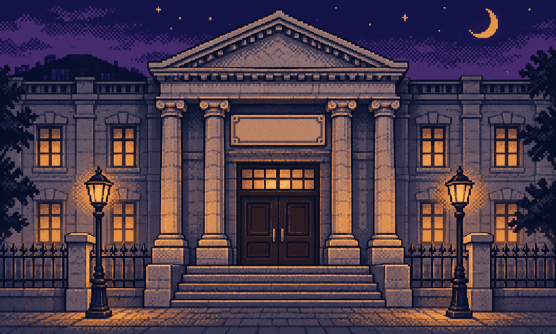

검열국을 탈출하라
검열관으로 위장해 도서과에 잠입한 독립운동가가 되어, 중요한 메시지를 ‘시’로 위장해 검열을 통과시키고 빠져나옵니다. 시대 배경과 상징·표현 방식을 활동으로 익혀요.
20분기본 제한 시간
8모둠한 방에 동시에
TV 연동실시간 진행판
진행 방법
교실 TV를 엽니다
TV 화면에서 방 번호를 정하면 학생 입장 QR이 나와요.
모둠이 QR로 들어옵니다
모둠마다 기기 하나로 입장해 함께 문제를 풀어요.
TV로 함께 지켜봅니다
모둠별 단계·남은 시간·의심도가 실시간으로 올라오고, 학생이 쓴 글을 TV에서 바로 판정해요.